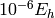

Warning
Python naming practices of file_that_includes_function.function_name() are followed below. In psi4 input files, it is only necessary to call the function name alone. That is, use energy('scf'), not driver.energy('scf').
Note
The options documented below are placed as arguments in the command that calls the Python function, not in the set globals block or with any other set command.
Note
Psithon keyword names and values are insensitive to case. The few exceptions are documented for the database() function, where case structure must match the database file.
Note
Boolean arguments can be specified by yes, on, true, or 1 for affirmative and no, off, false, or 0 for negative, all insensitive to case.
Note
Certain convergence and tolerance keywords, of type double (real numbers), may be specified using either a real numberor an integer; an integer X is then treated as the number of converged decimal digits required. For example, to request an energy converged to , the user may set the e_convergence keyword to 0.000001, 1.0e-6, or 6.
Note
The derivative level type for driver.optimize() and driver.frequency() functions can be specified by energy, none, or 0 for 0th derivative, gradient, first, or 1 for 1st derivative, and hessian, second, or 2 for 2nd derivative.